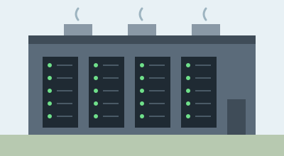

Quand on ouvre un site web, on a l'impression que tout est immatériel : pas de papier, pas de camion, pas de fumée. Pourtant, chaque page consultée fait travailler des machines bien réelles, qui consomment de l'électricité. Le web n'est pas dans les nuages, il est dans des bâtiments.
Où se cache Internet ?
Les pages web sont stockées sur des serveurs, des ordinateurs allumés jour et nuit. Ces serveurs sont regroupés par milliers dans des bâtiments appelés centres de données (ou datacenters). Il faut les alimenter en électricité, mais aussi les refroidir, car ils chauffent énormément.

Pour en savoir plus, lire l'article Centre de données sur Wikipédia.
Combien pèse une page web ?
Une page web a un poids, mesuré en octets : c'est la quantité de données que le navigateur doit télécharger pour l'afficher. La toute première page web, publiée au CERN en 1991, pesait quelques kilo-octets : uniquement du texte et des liens. Aujourd'hui, une page pèse couramment plus de 2 méga-octets, soit environ mille fois plus, à cause des images, des vidéos, des polices et des scripts.
Quelques ordres de grandeur
| Quoi | Combien |
|---|---|
| Première page web (1991) | quelques Ko |
| Page web typique aujourd'hui | plus de 2 Mo |
| Part du numérique dans les émissions mondiales de gaz à effet de serre | environ 3 à 4 % selon les estimations |
| Part des centres de données dans la consommation mondiale d'électricité | environ 1 à 2 % selon les estimations |
Que peut-on faire ?
Quand on crée un site, on peut limiter son impact :
- utiliser des images légères et à la bonne taille
- éviter les vidéos qui se lancent toutes seules
- ne charger que les scripts vraiment utiles
- écrire un code simple et propre
Cette démarche s'appelle la sobriété numérique, ou informatique durable (article Wikipédia).
Combien pèse ma navigation ?
Combien de pages web consultez-vous par jour, à peu près ?
Petit quiz
1. En quelle année la première page web a-t-elle été publiée au CERN ?
2. Combien pèse une page web typique aujourd'hui ?
3. Où sont stockées les pages web ?
Score : 0